# pip install plotnine matplotlibQuando temos interesse em analisar dados e resolver algum problema, logo pensamos nas possíveis tendências e correlações que as variáveis de estudo podem ter. Essa é uma etapa muito importante pois após a formatação e manipulação dos dados brutos, é possível comparar as hipóteses formuladas por nós com as informações que são obtidas por meio de estatísticas e visualizações de dados.
Mas o que é Visualização de Dados?
- Em resumo, visualização de dados é a representação dos dados em formato gráfico.
Mas o que é um gráfico?
- Gráfico é uma representação com forma geométrica e que é construída a partir de informações obtidas dos dados. Isso significa que o gráfico é um desenho que tem dimensões, forma, tamanho, comprimento, área, volume, etc.
Essas definições estão bem alinhadas com o livro The Grammar of Graphics de Leland Wilkinson, no qual o autor define um esquema geral para visualização de dados que divide os gráficos em componentes estéticas de objetos geométricos.
A partir desses conceitos, Hadley Wickham escreveu A Layered Grammar of Graphics e criou o ggplot2, um pacote de visualização de dados para a linguagem de programação estatística R. Esse pacote ficou muito popular em diferentes contextos e grupos sociais.
Para a linguagem Python, há o pacote plotnine. Também se baseia em The grammar of graphics e pacote ggplot2 da linguagem R. Portanto, esse post foi feito com o objetivo demonstrar alguns gráficos com a linguagem Python e o pacote plotnine.
import warnings
warnings.filterwarnings('ignore')
import pandas as pdplotnine
from plotnine import *
from plotnine.data import diamonds as plotnine_diamondsplotnine_diamonds.head()| carat | cut | color | clarity | depth | table | price | x | y | z | |
|---|---|---|---|---|---|---|---|---|---|---|
| 0 | 0.23 | Ideal | E | SI2 | 61.5 | 55.0 | 326 | 3.95 | 3.98 | 2.43 |
| 1 | 0.21 | Premium | E | SI1 | 59.8 | 61.0 | 326 | 3.89 | 3.84 | 2.31 |
| 2 | 0.23 | Good | E | VS1 | 56.9 | 65.0 | 327 | 4.05 | 4.07 | 2.31 |
| 3 | 0.29 | Premium | I | VS2 | 62.4 | 58.0 | 334 | 4.20 | 4.23 | 2.63 |
| 4 | 0.31 | Good | J | SI2 | 63.3 | 58.0 | 335 | 4.34 | 4.35 | 2.75 |
1.1 Construção dos primeiros gráficos
A estrutura padrão dos gráficos em plotnine segue a forma:
ggplot(data=<‘DADOS’>, mapping = aes(<‘MAPEAMENTO_VARIAVEIS’>)) + <‘GEOM_FUNCAO’>()
A componente <‘DADOS’> deve ser utilizada para importar os dados (geralmente de um data.frame) Já a componente <‘MAPEAMENTO_VARIAVEIS’> deve ser utilizada para estabelecer se alguma variável irá aparecer no eixo x ou y. Essa também pode ser utilizada por outras variáveis que serão representadas por cores, tamanhos ou formas diferentes. Para selecionar o tipo de gráfico que será plotado, deve-se usar as funções com prefixo geom.
Para a construção do primeiro gráfico, a variável ‘price’ foi escolhida.
g1 = ggplot(data=plotnine_diamonds,mapping=aes(x='price'))
g1.show()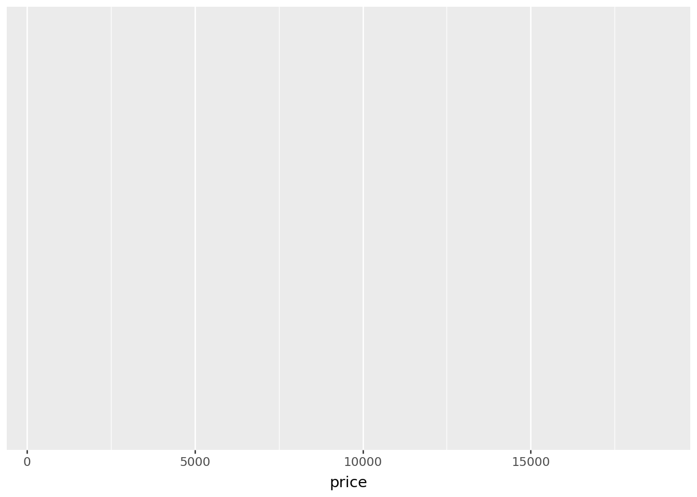
Perceba como essa primeira parte da construção do gráfico não está utilizando a componente <‘GEOM_FUNCAO’>. Somente está sendo delimitado que a variável ‘price’ irá aparecer no eixo ‘x’. Por conta disso, nenhum gráfico foi plotado.
1.2 Histograma
Para a construção de um histograma, basta acrescentar ao mapeamento armazenado no objeto ‘g1’ a função geom_histogram(). No exemplo abaixo, três elementos adicionais foram acrescentados a função geom_histogram() sendo:
- col: Cor de Contorno
- fill: Cor de Preenchimento
- alpha: Quandidade desejada de transparência
g2 = ggplot(data=plotnine_diamonds,mapping=aes(x='price')) + \
geom_histogram(fill='#CC092F')
g2.show()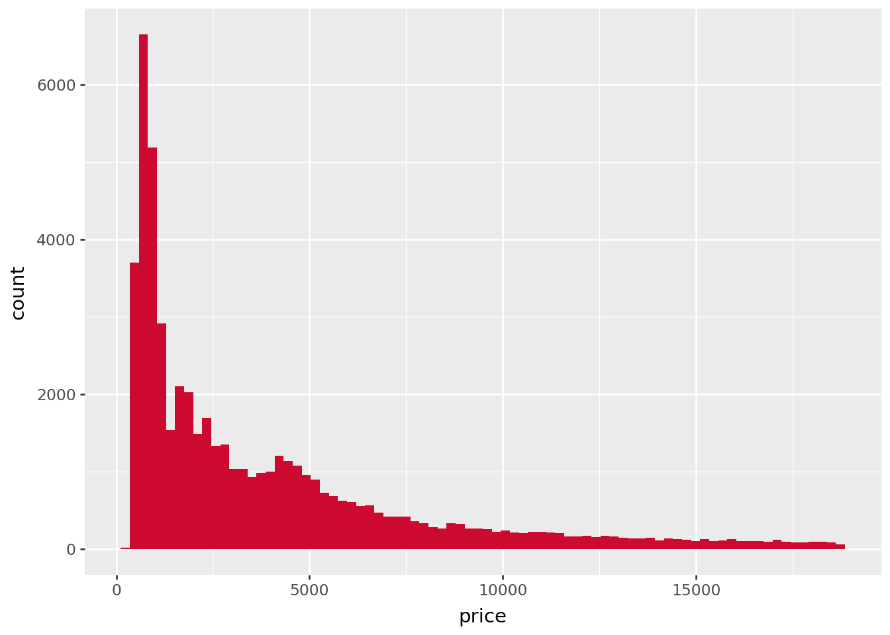
g3 = ggplot(data=plotnine_diamonds,mapping=aes(x='price')) + \
geom_histogram(fill='#CC092F',color='black')
g3.show()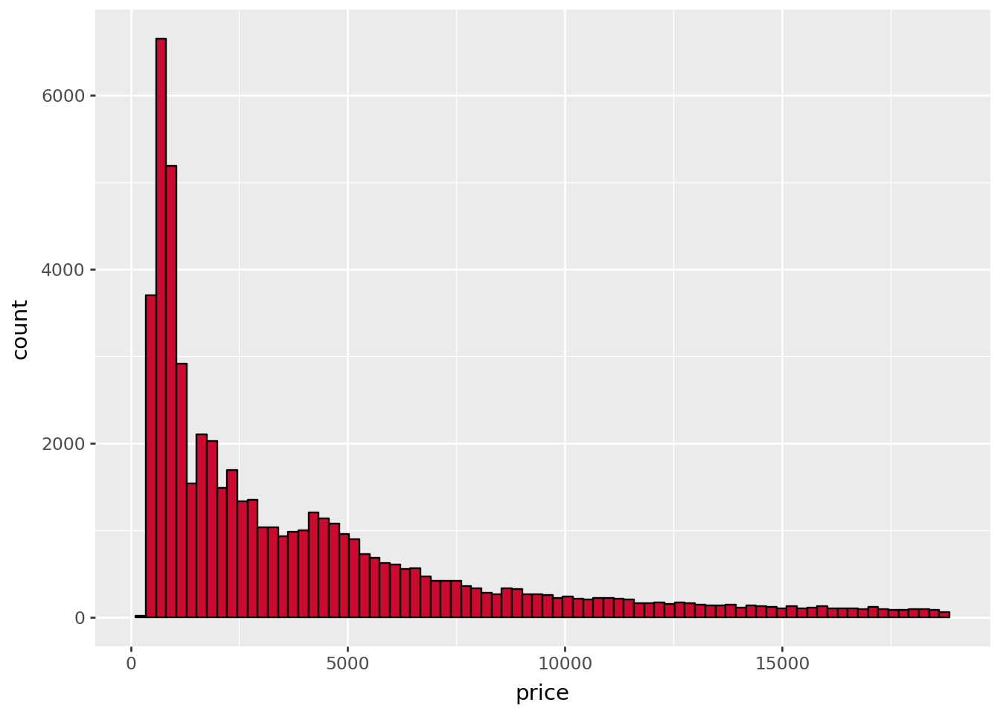
g4 = ggplot(data=plotnine_diamonds,mapping=aes(x='price')) + \
geom_histogram(fill='#CC092F',color='black',alpha=0.4)
g4.show()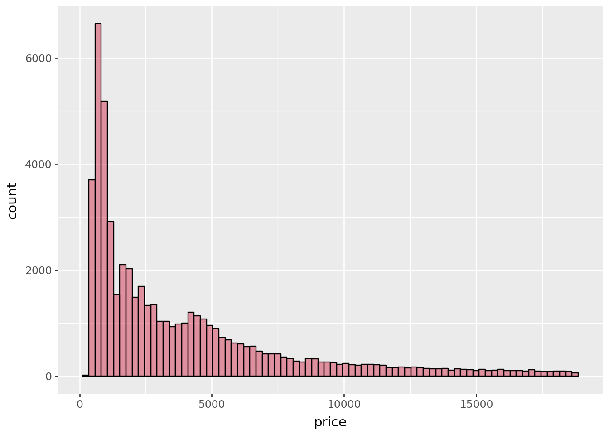
Além desses elementos mencionados, também é possível adicionar outros elementos específicos para cada tipo de geom. Como exemplo, o argumento ‘bins’ do geom_histogram() controla o número de barras será modificado.
g5 = ggplot(data=plotnine_diamonds,mapping=aes(x='price')) + \
geom_histogram(fill='#CC092F',color='black',alpha=0.4,bins=8)
g5.show()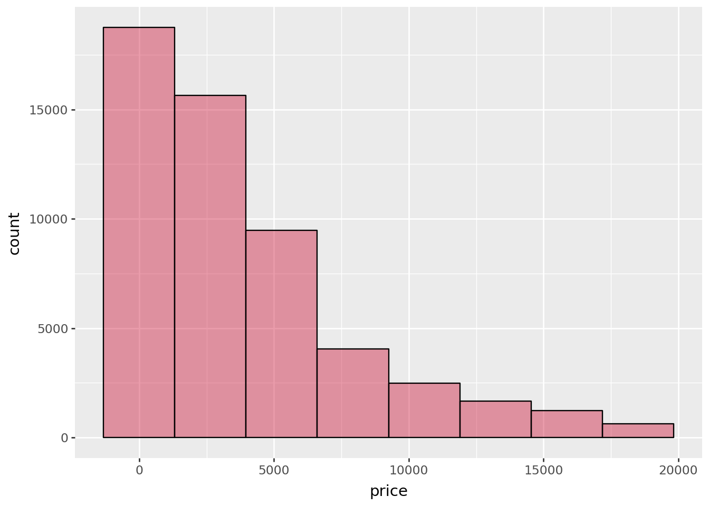
Como curiosidade, também foi adicionada a função geom_rug(). Essa função basicamente cria linhas abaixo do gráfico para cada observação dentro das faixas de valores definidas pelo histograma.
g6 = ggplot(data=plotnine_diamonds.head(25),mapping=aes(x='price')) + \
geom_histogram(fill='#CC092F',color='black',alpha=0.4,bins=5) + \
geom_rug()
g6.show()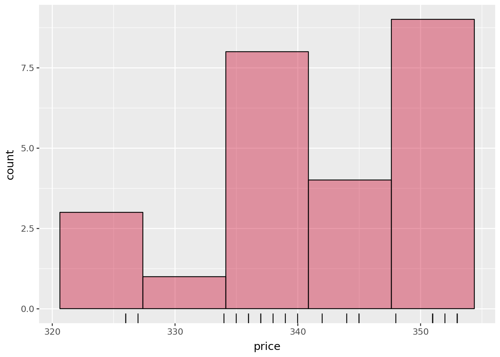
1.3 Densidade
Para construir um gráfico de densidade no plotnine, basta adicionar a função geom_density() à estrutura mapeada anteriormente. Novamente, adicionamos a função ‘geom_rug’.
g7 = ggplot(data=plotnine_diamonds,mapping=aes(x='price')) + \
geom_density(fill='#0059b3') + \
geom_rug()
g7.show()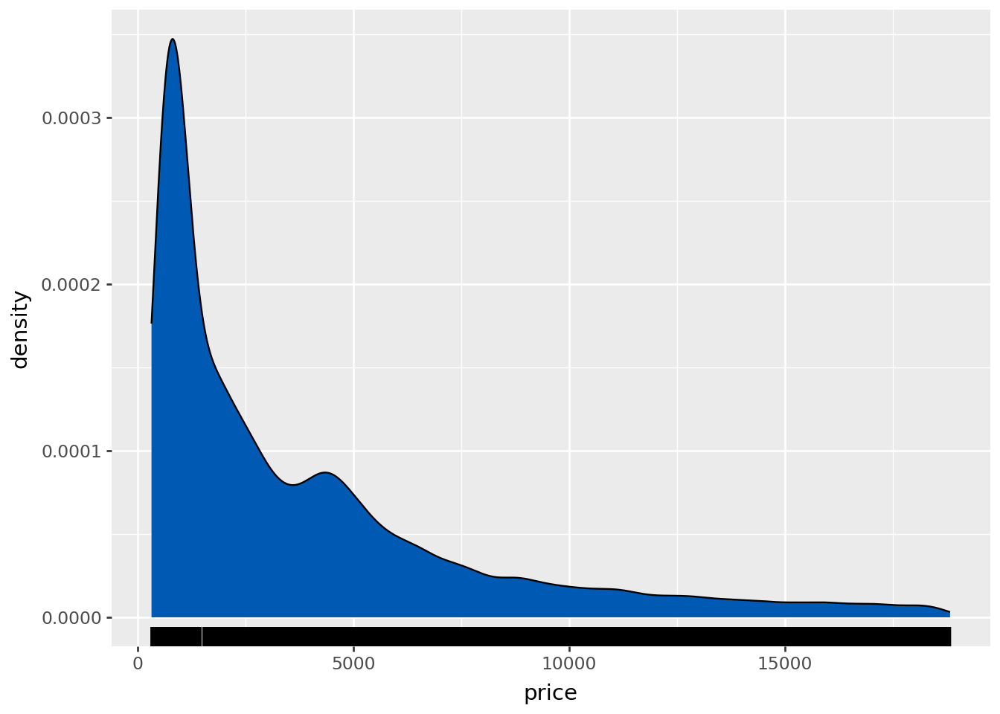
1.4 Boxplot
Pensando em análise univariada (uma variável), também é possível criar boxplots pelo pacote.
Aqui o mapeamento foi alterado do eixo ‘x’ (utilizado no histograma e no gráfico de densidade) para o eixo ‘y’. (em ‘x’ talvez seja necessário colocar algum valor).
g81 = ggplot(data=plotnine_diamonds,mapping=aes(y='table')) + \
geom_boxplot(fill='#0059b3',alpha=0.5)
g82 = ggplot(data=plotnine_diamonds,mapping=aes(x=100, y='table')) + \
geom_boxplot(fill='#0059b3',alpha=0.5)
g81.show()
g82.show()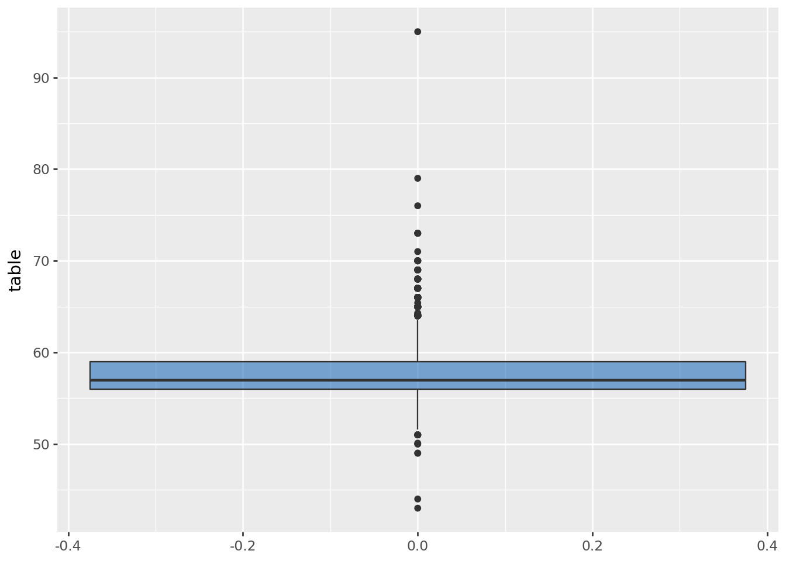
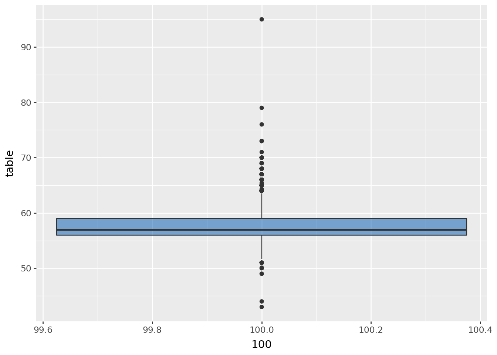
Como curiosidade, também foram adicionadas as funções xlab() (Alterar o nome do eixo x), coord_flip() (Girar o gráfico) e ggtitle() (Adicionar um título).
g9 = ggplot(data=plotnine_diamonds,mapping=aes(x=100,y='table')) + \
geom_boxplot(fill='#0059b3',alpha=0.5) + \
xlab('table') + \
coord_flip() + \
ggtitle('Boxplot')
g9.show()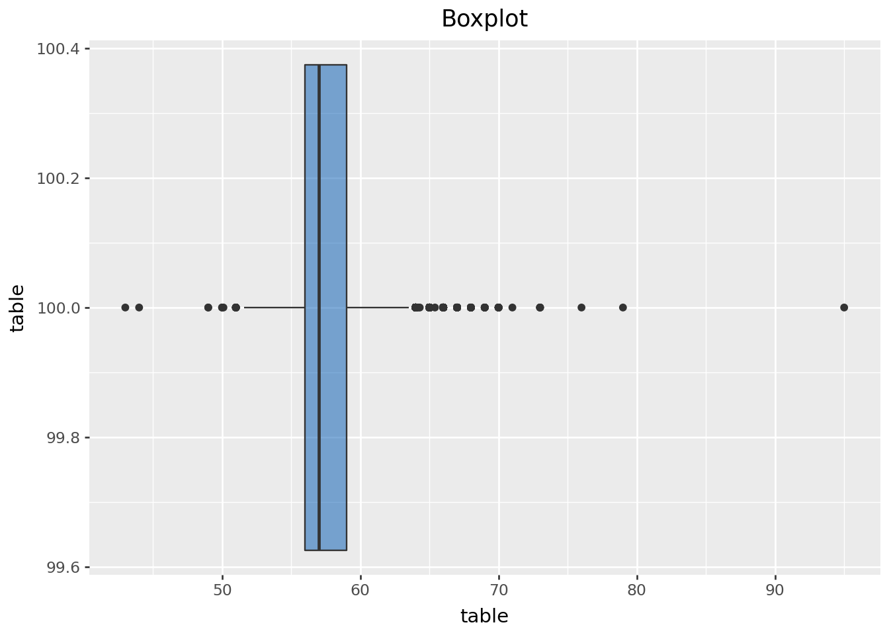
Quando o assunto é análise bivariada(duas variáveis), podemos adicionar uma nova variável no eixo ‘x’ e fazer um boxplot para cada nível dessa variável.
g10 = ggplot(data=plotnine_diamonds, mapping=aes(x='cut',y='table')) + \
geom_boxplot(fill='#CC092F',alpha=0.5) + \
xlab('table') + \
ggtitle('Boxplots')
g10.show()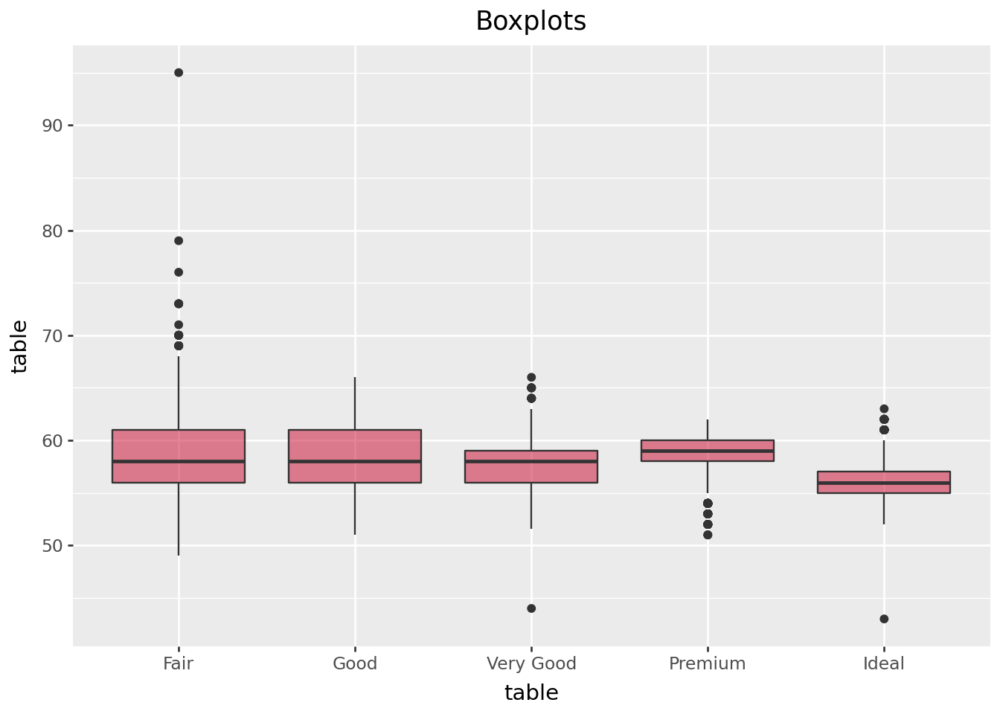
Também podemos modificar as cores de contorno ou de preenchimento por essa mesma variável. Essa funcionalidade é mais interessante na presença de mais variáveis, mas fica como exemplo.
g11 = ggplot(data=plotnine_diamonds,mapping=aes(x='cut',y='table',color='cut')) + \
geom_boxplot(alpha=0.5) + \
xlab('table') + \
ggtitle('Boxplots')
g11.show()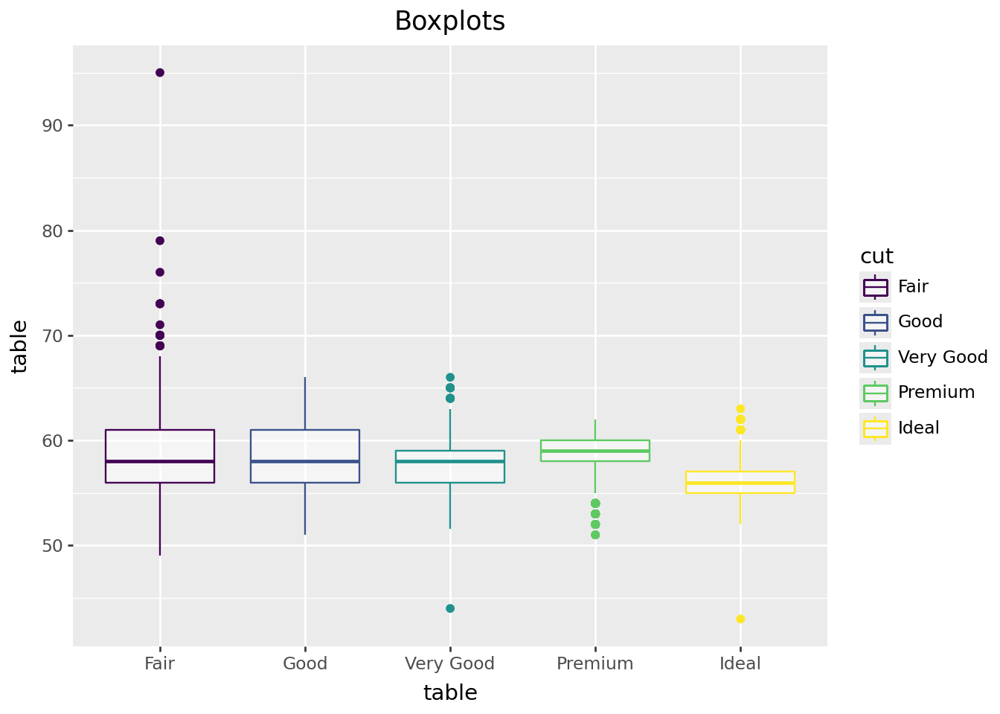
g12 = ggplot(data=plotnine_diamonds,mapping=aes(x='cut',y='table',fill='cut')) + \
geom_boxplot(alpha=0.5) + \
xlab('table') + \
ggtitle('Boxplots')
g12.show()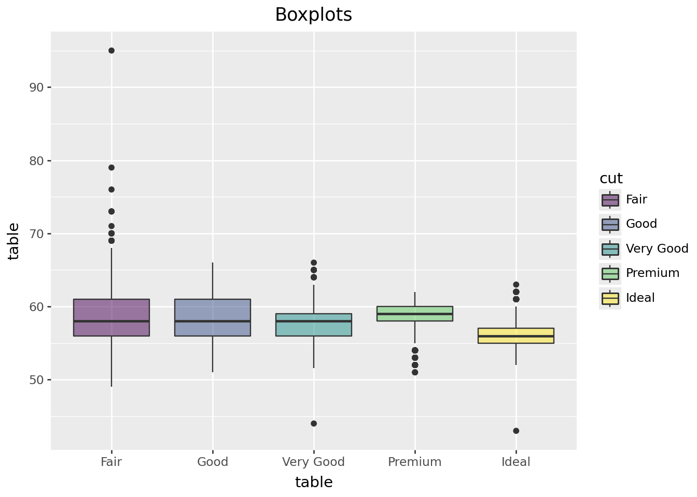
1.5 Gráfico de Barras
Um gráfico de barras pode ser utilizado quando desejamos observar as frequências absolutas ou relativas de uma variável [geom_bar()] ou quando desejamos utilizar a altura das barras para representar outros valores [geom_col()].
Esse tipo de gráfico necessita de um mapeamento com pelo menos duas variáveis, sendo uma no eixo ‘x’ (Variável sendo observada) e outra no eixo ‘y’ (Frequência Absoluta ou Frequência Relativa)
geom_bar()
g13 = ggplot(data=plotnine_diamonds,mapping=aes(x='cut')) + \
geom_bar(fill='#CC092F',color='black')
g13.show()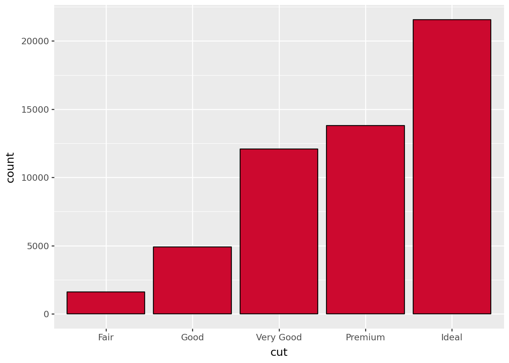
- Altera ordem do eixo x
g14 = ggplot(data=plotnine_diamonds,mapping=aes(x='cut')) + \
geom_bar(fill='#CC092F',color='black') + \
scale_x_discrete(limits=plotnine_diamonds['cut'].value_counts().index.tolist())
g14.show()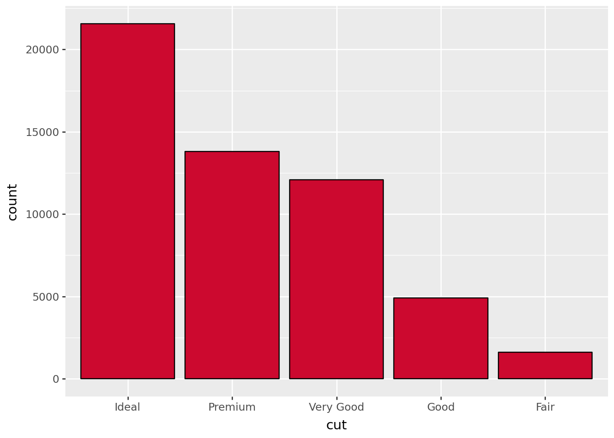
geom_col()
- Cria tabela auxiliar
diamonds_sum = plotnine_diamonds.groupby('color')['price'].sum().reset_index(name='sum')
diamonds_sum = diamonds_sum.sort_values(by='sum')
diamonds_sum| color | sum | |
|---|---|---|
| 6 | J | 14949281 |
| 0 | D | 21476439 |
| 5 | I | 27608146 |
| 1 | E | 30142944 |
| 2 | F | 35542866 |
| 4 | H | 37257301 |
| 3 | G | 45158240 |
- Constroi gráfico baseado na tabela auxiliar
g15 = ggplot(data=diamonds_sum,mapping=aes(x='color',y='sum')) + \
geom_col(fill='#0059b3',color='black')
g15.show()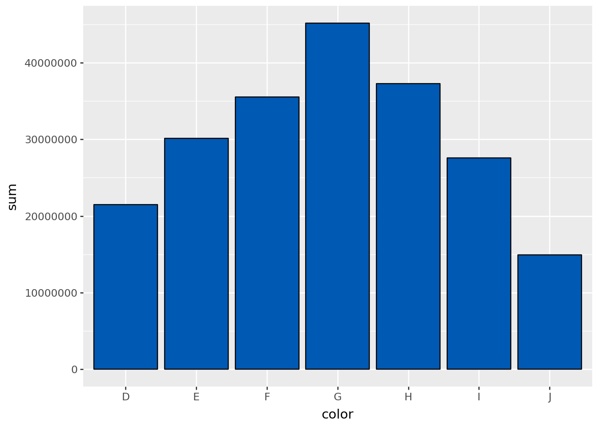
- Cria outra tabela auxiliar
diamonds_sum_group = plotnine_diamonds.groupby(['color','cut'])['price'].sum().reset_index()
diamonds_sum_group| color | cut | price | |
|---|---|---|---|
| 0 | D | Fair | 699443 |
| 1 | D | Good | 2254363 |
| 2 | D | Very Good | 5250817 |
| 3 | D | Premium | 5820962 |
| 4 | D | Ideal | 7450854 |
| 5 | E | Fair | 824838 |
| 6 | E | Good | 3194260 |
| 7 | E | Very Good | 7715165 |
| 8 | E | Premium | 8270443 |
| 9 | E | Ideal | 10138238 |
| 10 | F | Fair | 1194025 |
| 11 | F | Good | 3177637 |
| 12 | F | Very Good | 8177367 |
| 13 | F | Premium | 10081319 |
| 14 | F | Ideal | 12912518 |
| 15 | G | Fair | 1331126 |
| 16 | G | Good | 3591553 |
| 17 | G | Very Good | 8903461 |
| 18 | G | Premium | 13160170 |
| 19 | G | Ideal | 18171930 |
| 20 | H | Fair | 1556112 |
| 21 | H | Good | 3001931 |
| 22 | H | Very Good | 8272552 |
| 23 | H | Premium | 12311428 |
| 24 | H | Ideal | 12115278 |
| 25 | I | Fair | 819953 |
| 26 | I | Good | 2650994 |
| 27 | I | Very Good | 6328079 |
| 28 | I | Premium | 8491146 |
| 29 | I | Ideal | 9317974 |
| 30 | J | Fair | 592103 |
| 31 | J | Good | 1404271 |
| 32 | J | Very Good | 3460182 |
| 33 | J | Premium | 5086030 |
| 34 | J | Ideal | 4406695 |
- Cria novo gráfico
g16 = ggplot(data=diamonds_sum_group,mapping=aes(x='cut',y='price',fill='color')) + \
geom_col(stat="identity")
g16.show()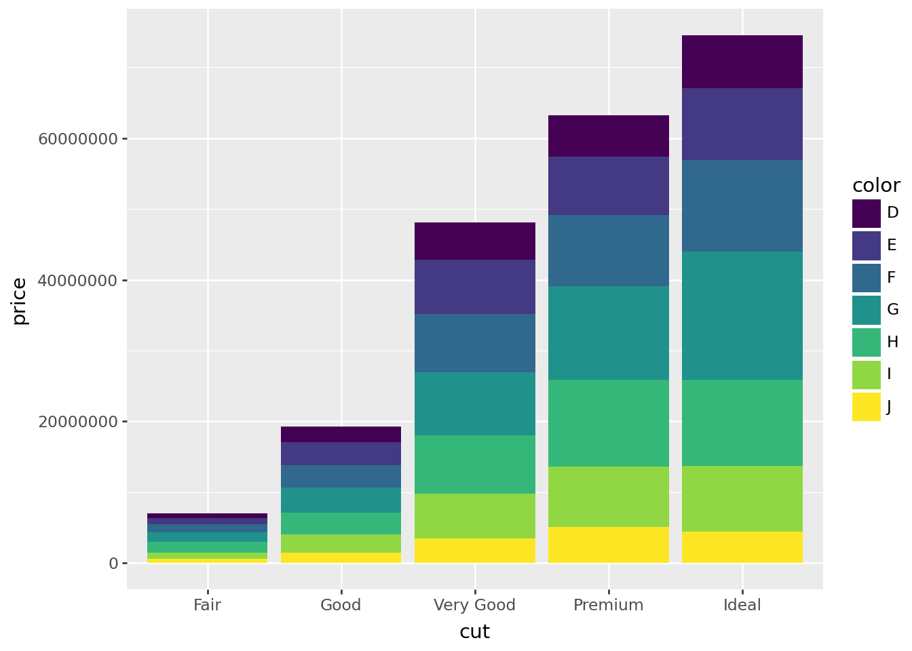
- Cria novo gráfico
g17 = ggplot(data=diamonds_sum_group,mapping=aes(x='cut',y='price',fill='color')) + \
geom_col(position="dodge", stat="identity")
g17.show()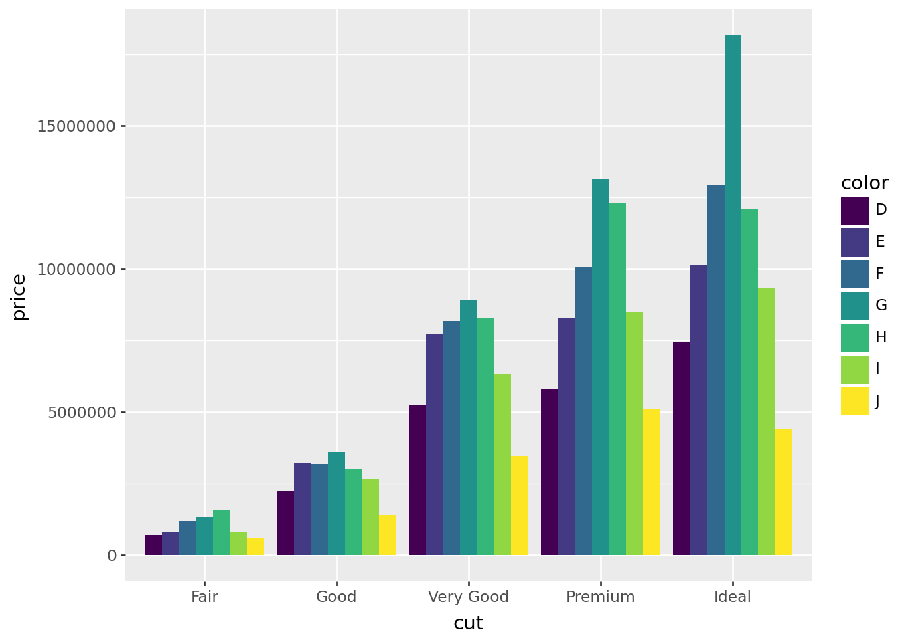
- Cria outra tabela auxiliar com porcentagens
diamonds_count = plotnine_diamonds.groupby('clarity')['clarity'].count().reset_index(name='count')
diamonds_count['percentage'] = round((diamonds_count['count']/sum(diamonds_count['count']))*100,1).astype(str) + '%'
diamonds_count = diamonds_count.sort_values(by='count')
diamonds_count_order = plotnine_diamonds['clarity'].value_counts().index.tolist()
diamonds_count| clarity | count | percentage | |
|---|---|---|---|
| 0 | I1 | 741 | 1.4% |
| 7 | IF | 1790 | 3.3% |
| 6 | VVS1 | 3655 | 6.8% |
| 5 | VVS2 | 5066 | 9.4% |
| 4 | VS1 | 8171 | 15.1% |
| 1 | SI2 | 9194 | 17.0% |
| 3 | VS2 | 12258 | 22.7% |
| 2 | SI1 | 13065 | 24.2% |
- Cria gráfico com porcentagens no topo de cada barra
g18 = ggplot(data=diamonds_count,mapping=aes(x='clarity',y='count',label='percentage')) + \
geom_col(fill='#0059b3',color='black') + \
geom_text(va='bottom') + \
scale_x_discrete(limits=diamonds_count_order)
g18.show()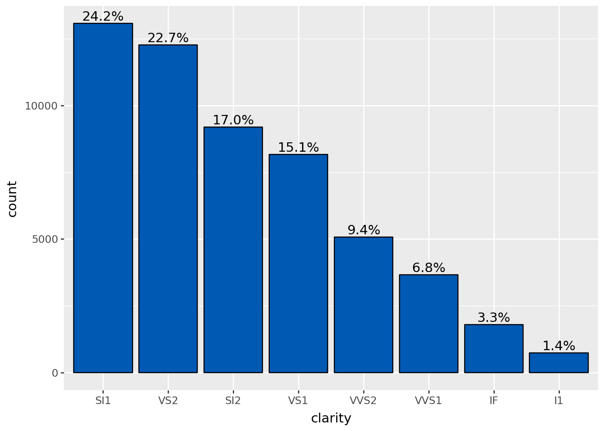
- Cria gráfico com porcentagens no meio de cada barra
g19 = ggplot(data=diamonds_count,mapping=aes(x='clarity',y='count',label='percentage')) + \
geom_col(fill='#0059b3',color='black') + \
geom_label(position = position_stack(vjust = 0.5)) + \
scale_x_discrete(limits=diamonds_count_order)
g19.show()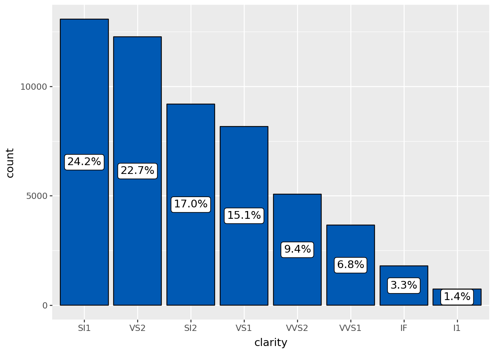
1.7 Gráfico de Dispersão
- Carrega nova base de dados
from plotnine.data import mpg as plotnine_mpgplotnine_mpg.head()| manufacturer | model | displ | year | cyl | trans | drv | cty | hwy | fl | class | |
|---|---|---|---|---|---|---|---|---|---|---|---|
| 0 | audi | a4 | 1.8 | 1999 | 4 | auto(l5) | f | 18 | 29 | p | compact |
| 1 | audi | a4 | 1.8 | 1999 | 4 | manual(m5) | f | 21 | 29 | p | compact |
| 2 | audi | a4 | 2.0 | 2008 | 4 | manual(m6) | f | 20 | 31 | p | compact |
| 3 | audi | a4 | 2.0 | 2008 | 4 | auto(av) | f | 21 | 30 | p | compact |
| 4 | audi | a4 | 2.8 | 1999 | 6 | auto(l5) | f | 16 | 26 | p | compact |
- Cria gráfico de dispersão
g20 = ggplot(data=plotnine_mpg,mapping=aes(x='displ',y='cty')) + \
geom_point()
g20.show()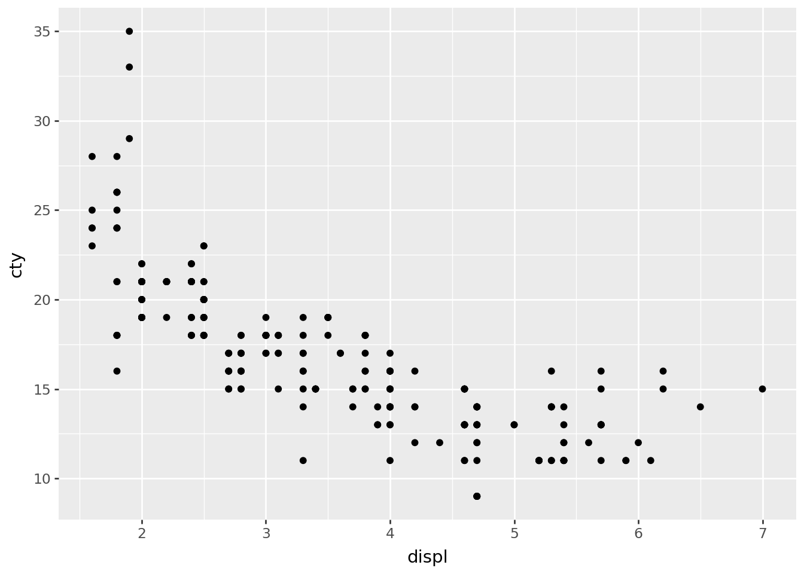
- Cria gráfico de dispersão com modificação das cores de preenchimento por outra variável (qualitativa)
g21 = ggplot(data=plotnine_mpg,mapping=aes(x='displ',y='cty',color='manufacturer')) + \
geom_point()
g21.show()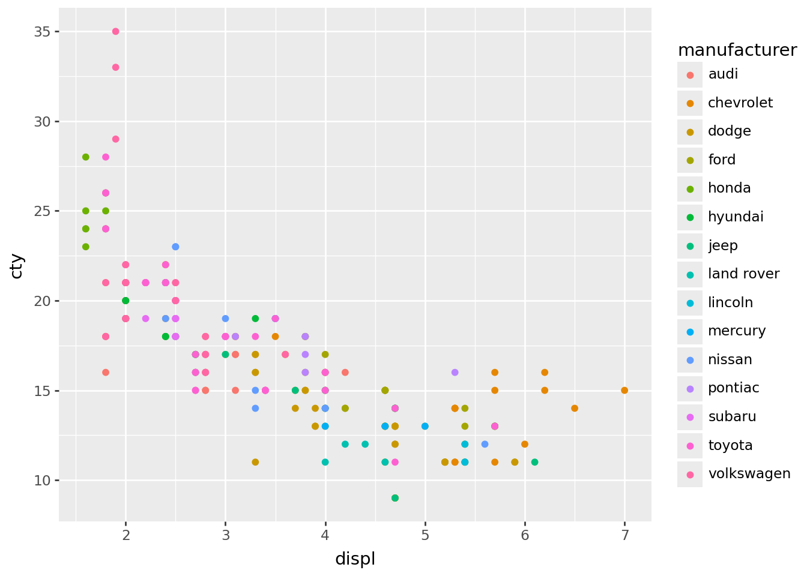
- Cria gráfico de dispersão com modificação das cores de preenchimento por outra variável (quantitativa)
g22 = ggplot(data=plotnine_mpg,mapping=aes(x='hwy',y='cty',color='displ')) + \
geom_point()
g22.show()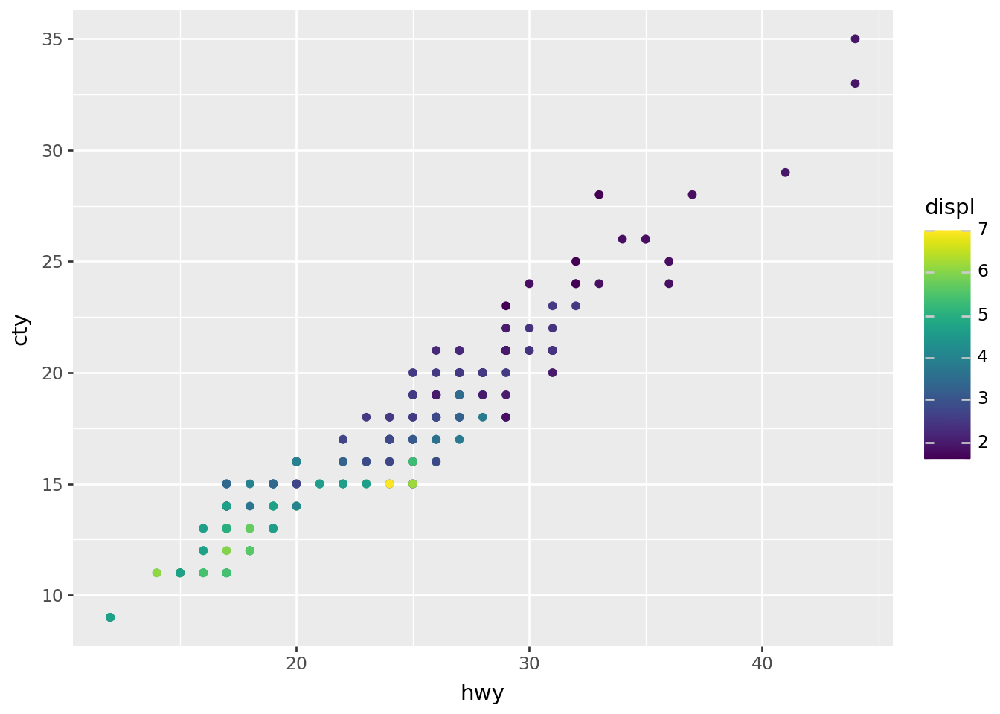
- Cria gráfico de dispersão com modificação das cores de preenchimento por outra variável (quantitativa) e acrescenta uma reta de tendência
g23 = ggplot(data=plotnine_mpg,mapping=aes(x='hwy',y='cty',color='displ')) + \
geom_point() + \
geom_smooth(method = 'lm',color='blue')
g23.show()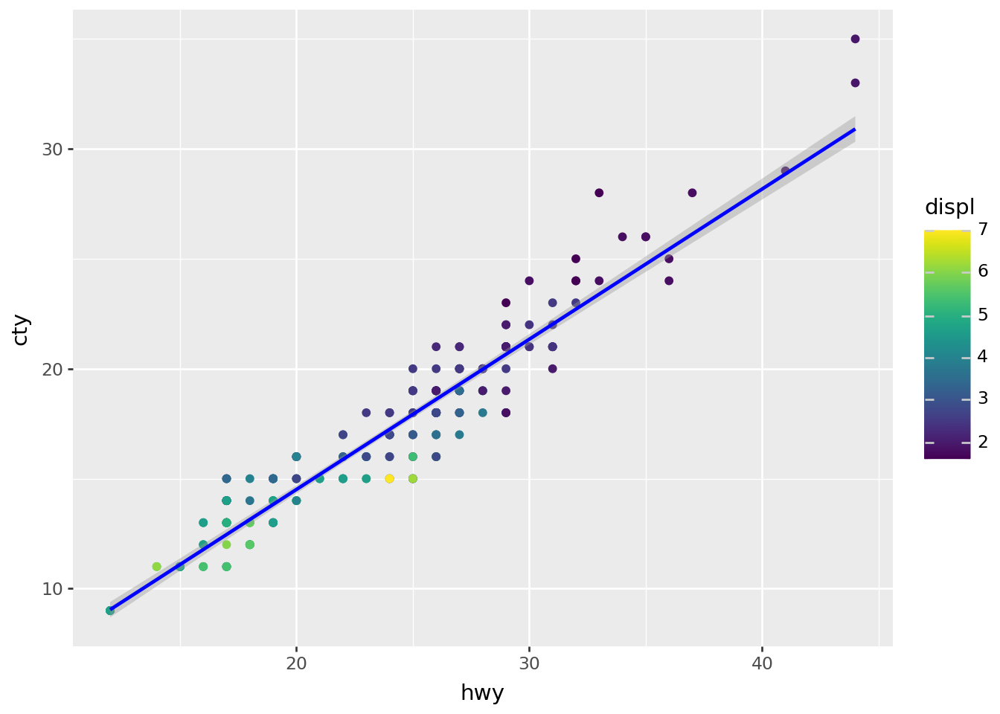
Muito obrigado por ter lido. Espero que tenha gostado. Continue aprendendo!
Referencias
https://www.amazon.com.br/Grammar-Graphics-Leland-Wilkinson/dp/0387245448
http://vita.had.co.nz/papers/layered-grammar.html
https://ggplot2.tidyverse.org/
https://plotnine.readthedocs.io/en/stable/
https://medium.com/@gscheithauer/data-visualization-in-python-like-in-rs-ggplot2-bc62f8debbf5
https://www.curso-r.com/material/ggplot/
https://towardsdatascience.com/introduction-to-data-visualization-in-python-89a54c97fbed
https://www.youtube.com/watch?v=pHrwqLhAaMw - (Greg Lamp - ggplot For Python)